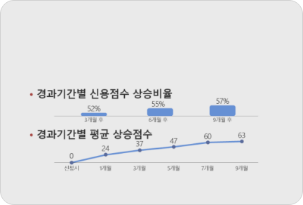
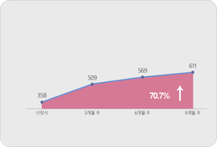
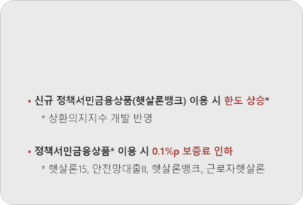
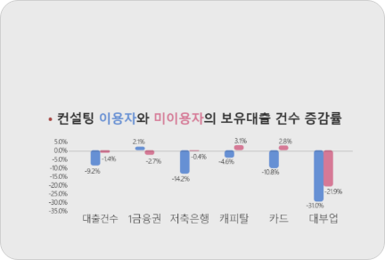

=<!DOCTYPE html>
<html lang="ko">
<head>
<meta charset="UTF-8">
<meta http-equiv="X-UA-Compatible" content="IE=edge">
<meta name="viewport" content="width=device-width, initial-scale=1.0">
<title>신용·부채관리 컨설팅 </title>
<link rel="shortcut icon" type="image/x-icon" href="../images/favicon.ico">
<link rel="stylesheet" href="../css/modules/bootstrap.css">
<link rel="stylesheet" href="../css/style_new.css">
</head>
<body>
<section class="contents">
  <div class="content-head">
    <h2 class="title">신용·부채관리 컨설팅</h2>
    <div class="con row">
      <ul class="col-12 use">
        <li><span></span></li>
        <li><span></span></li>
      </ul>
      <ul class="col-12 path">
        <li>
          <a href="#"><span>홈</span></a>
        </li>
        <li>
          <a href="#">고객서비스</a>
        </li>
        <li>
          <a href="#">금융소비자보호</a>
        </li>
        <li>
          <a href="#">통합지원센터</a>
        </li>
      </ul>
    </div>
  </div> <!-- //content-head-->
  <div class="content-box mt-6">
    <h3 class="box-in-main-txt mb-2">신용·부채관리 컨설팅이란 ?</h3>
    <h5 class="box-in-sub-txt text-left ">햇살론, 햇살론15, 미소금융 등 정책서민금융상품을 이용하신 고객을 대상으로, 금융 전문 컨설턴트가 월 1회 신용과 부채 상태를 점검해 금융비용 경감 솔루션을 제공하는 1:1 맞춤형 무료 컨설팅 입니다.</h5>
    <h3 class="box-in-main-txt mt-5 mb-3">신용·부채관리 컨설팅을 받으시면</h3>  
    <div class="row center ">
      <div class="consulting border-radius col-12 col-lg-6 col-sm-6 position-relative text-center mb-2">
        <div class="box-bg-after"></div>
        <h4 class="box-in-sub-txt position-absolute text-left font-weight-bold">컨설팅 고객 57%의 신용점수가 평균 63점 상승했어요.</h4>
      </div>
      <div class="consulting border-radius col-12 col-lg-6 col-sm-6 position-relative text-center mb-2">
        <div class="box-bg-after"></div>
        <h4 class="box-in-sub-txt position-absolute text-left font-weight-bold">저신용에서 벗어났어요.</h4>
      </div>
    </div>
    <div class="row center">
      <div class="consulting border-radius col-12 col-lg-6 col-sm-6 position-relative text-center mb-2">
        <div class="box-bg-after"></div>
        <h4 class="box-in-sub-txt position-absolute text-left font-weight-bold">신규 정책서민금융상품 이용 시 한도는 오르고 금리는 내려갑니다.</h4>
      </div>
      <div class="consulting border-radius col-12 col-lg-6 col-sm-6 position-relative text-center mb-2">
        <div class="box-bg-after"></div>
        <h4 class="box-in-sub-txt position-absolute text-left font-weight-bold">고금리부채는 줄고 건강한 부채는 증가해 금융비용 부담이 줄었어요</h4>
      </div>
    </div>
    <!-- 컨설팅 진행 절차1 -->
    <h3 class="box-in-main-txt my-5">컨설팅 진행 절차 </h3>
    <ul class="apply row">
      <li class="col-12 col-lg-3 mb-3">
        <div class="box-wrap second center p-3 flex-column text-center border-radius position-relative gray-bg">
          <h4 class="box-in-main-txt consulting mb-2">컨설팅 신청</h4>
          <span class="box-in-sub-txt ">미소금융지점,<br/>서민금융통합지원센터,<br/>컨설팅 신청페이지<br/>(con.kinfa.or.kr)</span>
        </div>
      </li>
      <li class="col-12 col-lg-3 mb-3">
        <div class="box-wrap second center p-3 flex-column text-center border-radius position-relative gray-bg">
          <h4 class="box-in-main-txt consulting mb-2">전담 컨설턴트 배정</h4>
          <span class="box-in-sub-txt">컨설팅 유형(유선 또는 채팅)과희망 상담시간을 고려하여 전담컨설턴트 배정</span>
        </div>
      </li>
      <li class="col-12  col-lg-3 mb-3">
        <div class="box-wrap third center p-3 flex-column text-center border-radius position-relative gray-bg">
          <h4 class="box-in-main-txt consulting mb-2">월 1회 컨설팅 진행</h4>
          <span class="box-in-sub-txt ">월1회, 최대 6개월해당월 고객상황을 분석한 신용리포트를 기반으로 전문가의 컨설팅 서비스 제공</span>
        </div>
      </li>
      <li class="col-12  col-lg-3 ">
        <div class="bg border-radius text-center align-items-center d-flex flex-column justify-content-center text-white center">
          <h4 class="box-in-main-txt consulting mb-2 text-white">사후관리</h4>
          <span class="box-in-sub-txt text-white px-2">회차별 만족도 조사를 통해 개선사항을 반영하고, 최종종료 후 주기적으로 금융생활 정보를 제공하여 신용관리 역량강화 지원</span>
        </div>
      </li>
    </ul>
    <!--/// 컨설팅 진행 절차1 -->
    <!-- 컨설팅 진행 절차 2-->
    <h3 class="box-in-main-txt my-5">컨설팅 진행 절차 </h3>
    <ul class="row">
      <li class="col-12 col-lg-4 col-md-6">
        <div class="box-wrap p-3 text-left border-radius min-blue-box h-210 mb-2">
          <h4 class="box-in-sub-txt-color-chr1 mb-3  text-point1 font-weight-bold">1회차<br/>유대감 형성 및 제도 이해</h4>
          <span class="box-in-sub-txt pb-4">• 신용부채관리 컨설팅 서비스 소개<br/>• 신용평가제도 소개<br/>• 신용평점 및 부채현황 안내<br/>• 고객현황 및 니즈파악<br/>• 신용점수 상승 팁안내</span>
        </div>
      </li>
      <li class="col-12 col-lg-4 col-md-6">
        <div class="box-wrap p-3 text-left border-radius min-blue-box h-210 mb-2">
          <h4 class="box-in-sub-txt-color-chr1 consulting mb-3 text-point1 font-weight-bold">2~5회차<br/>소비·재무상황 정비</h4>
          <span class="box-in-sub-txt">• 소비습관 점검<br/>• 부채현황 점검<br/>• 우선변제 대상 검토<br/>• 재무상황별 개선방안 제시 및 점검</span>
        </div>
      </li>
      <li class="col-12  col-lg-4 mb-3">
        <div class="box-wrap p-3 text-left border-radius min-blue-box h-210">
          <h4 class="box-in-sub-txt-color-chr1 consulting mb-3 font-weight-bold text-point1 font-weight-bold" >6회차<br/>장기관리방법 안내</h4>
          <span class="box-in-sub-txt ">• 이행결과 최종점검 및 제언<br/>• 신용상승 시 대환상품 연계<br/>• 신용관리방안 안내 및 자료 제공<br/>• 금융교육 취업 등 안내</span>
        </div>
      </li>
    </ul>
    <span class="s-size-txt">* 월별 신용점수 상승·하락 사유 안내, 맞춤형 신용 상승방안 제시, 제안내용 이행 점검 및 기간 중 발생한 금융이슈 상담</span>
    <div class="point3-btn row my-4 justify-content-lg-end d-sm-flex center">
      <a class="col-lg-3 col-sm-6 col-12 apply-btn py-2 border-radius center m-2" href="javascript:;">신청 바로가기</a>
    </div>
  </div>
 <!-- //content -->
</section> <!-- // section -->
</body>
</html>